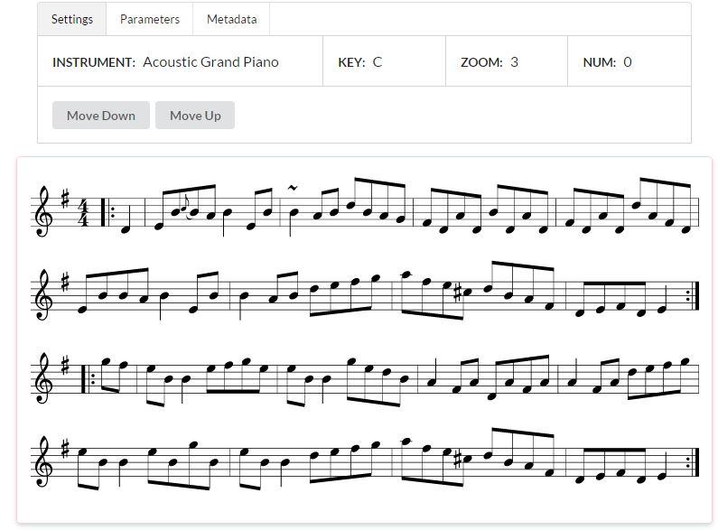
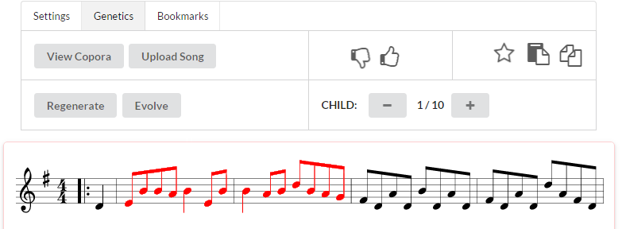

Teaching Composition to a Computer
... for people who don't know music
Table of Contents
Introduction
Algorithmic and generative music composition tends to fall under the vast umbrella of Computational Creativity, a relatively new field of research.
- Computational Creativity
-
- Computational creativity is a multidisciplinary endeavour that is located at the intersection of the fields of artificial intelligence, cognitive psychology, philosophy, and the arts. Read more…
The goals of computational creativity are
- to construct a program or computer capable of human-level creativity
- to better understand human creativity and to formulate an algorithmic perspective on creative behavior in humans
- to design programs that can enhance human creativity without necessarily being creative themselves
These are rather lofty goals, but represent incredibly important directions for A.I. research, and for our own understanding of creativity. As the field has grown, there’s been a shift from ‘mere generation’ to evaluation methods – e.g. what are the measures of creativity, what distinguishes creative work from uncreative work?
There’s a whole slew of interesting work that’s been done already, some examples are:
- The Painting Fool - a computer artist who has received comissions for his/her/its work.
- MetaphorMagnet - a twitter bot that comes up with its own metaphors (and more!).
Although here, the focus will be on music composition.
Common Techniques
Most techniques focus on ‘mere generation’ of music – that is, there isn’t much in the way of evaluation techniques – and are generally applications of machine learning research. The most common approach is to ‘learn’ a style of composition from a source corpora, and generate music that is similar to the source.
Markov Chains
Markov Chains are incredibly simple and generally have interesting output, hence their popularity. Markov based compositions tend to lack any high-level structure, although there have been attempts to remedy this problem. One of the most interesting involves a scheme similar to generating and filling in madlibs [5].
The Madlib Approach
-
Structure Generation: Sketch out the piece by identifying something like a rhyme scheme for phrases and/or motifs; e.g. ABAA BBCB.

-
Chord Generation: Place chords by assigning each a root note to each ‘blank’.

-
Melody Generation: Generate notes corresponding to the chord for each measure.

Genetic Algorithms
The algorithmic version of natural selection. Given an initial population, there are generally three steps to a genetic algorithm.
- Selection – Assign every member of the population a fitness score, which measures how ‘good’ that member is.
- Mating – Combine the most members with the highest fitness scores to create a new generation of ‘children’.
- Mutation – Randomly change the values of the ‘children’.
For example, consider a situation where you have 10 Markov Chains from 10 different places, and your fitness function is just the probability of outputting a C#. The steps would then be:
- Selection – Choose the five Markov Chains with the highest probability of outputting a C#.
- Mating – For every possible pair from the previous step, create a new Markov Chain that uses half of the probabilities from one parent, and half from the other.
- Mutation – Randomly change the probabilities for the children generated from the previous step.
Neural Networks
Neural Networks are the algorithmic version of neurons in the brain. The way it works is that each node can be ‘on’ or ‘off’, and if a neuron is ‘on’, it has a probability of activating connected neurons (e.g. turning them ‘on’ as well). Do this a bunch of times until you get to the output neurons, and you have the result.

This method has been very successful in practice [3], although doesn’t vary much in style.
Previous Work
Functional Scaffolding for Musical Composition
Functional scaffolding for musical composition (FSMC) by Hoover et. al. [1] details a method of music generation which enables a user to create complete multipart arrangements from a single monophonic track without the need for musical expertise. This is an example of computer-assisted creativity, where a novice can create something beyond their expertise with the help of a computer.
In essence, the source monophonic melody serves as the scaffold or musical starting point of the system. FSMC then allows the user to explore potential accompaniments from this scaffold. Each instrument in the scaffold is generated using neural networks. Users can navigate the musical space by using an interface (MaestroGenesis, in the paper), and thums-up or thumps-down accompaniments to evolve the neural networks to help the system generate music more in line with what they’re looking for.
Examples of the kind of output this system generates can be found here.
An Unnatural Selection
A live generative music project by Arne Eignfeldt [2] which generates music during a performance, meant to be sight-read by musicians.
From the program notes:
Musical ideas are born, are passed on to new generations and evolved, and eventually die out, replaced by new ideas
In short, a genetic algorithm is used to unfold the music over time. Here, each instrument is a different population, each phrase an individual with the rhythmic and melodic material of the phrase acting as its chromosomes.
So like natural selection, individuals in a population breed together to produce new ‘offspring’ which may be subject to random mutations. Interestingly, there is no fitness function in this work; all individuals pass to the next generation.
Here’s an overview:
- Uses a genetic algorithm to unfold the music over time.
- Each instrument corresponds to a different population.
- Each phrase is an individual.
- Its rhythmic and melodic material are chromosomes.
- In the beginning, some initial phrases are generated that are a few measures long.
- For each subsequent generation:
- Every individual (phrase) is segmented according to interval size, rests, and duration spanning from one to several beats.
- Some of the segments enter a pool where random crossover (mixing) of segments between populations. There is also a potential for mutation:
- scrambling of pitch class
- transposition of +/- 12 pitch-classes
- sort pitch class in ascending or descending order
- substitute rests for notes
- There is no fitness function; all individuals pass to the next generation (if the instrument is active).
The following corpora was used:
- Movement I: 19 compositions by Pat Metheny
- Movement II: 2 compositions by Pat Metheny and 2 by Arvo Pärt
- Movement III: 1 composition by Terry Riley and 2 by Pat Metheny
An Unnatural Selection: I - Imagination is a Way
To quote the author:
Whether the system is computationally creative is a more difficult matter to determine. While I echo Cope’s desire that “what matters most is the music” (Cope 2005)1, I am fully aware of Wiggins reservations that “with hand-coded rules of whatever kind, we can never get away from the claim that the creativity is coming from the programmer and not the program” (Wiggins 2008)2
My Work
I’ve only just begun working on generative music and so my approaches are rather naive and lack any solid theoretical background (though hopefully improving).
Melody Generator for Lyrics
This system receives a lyrical phrase as input and generates a melody for it. I’m working on this project for my Master’s thesis in Computer Science. It’s still just getting started, but thus far the way it works is:
- Break the lyrical phrase into individual syllables
- Initially, assign a quarter note to each syllable
- Increase the duration of syllables that are vowels by a random amount.
- Assign pitches to the syllable durations
Currently, pitches are assigned using a Markov Chain trained on folk music. The analysis of syllables is done using CMUdict (the Carnegie Mellon Pronouncing Dictionary), which yields the IPA (International Phonetic Alphabet) pronunciation for each word. This allows us to check for syllables that are vowels.
BAESIL
B.A.E.S.I.L. (an acronym for BAESIL Automates Exploratory Songwriting Interactively, Live) is a composition tool which uses generative music methods to help a user write a song, initially targeted at game developers. BAESIL is largely inspired by the concept of casual creators [4].
Essentially, BAESIL is used to help a user discover the music they want, rather than compose it from scratch.

To generate music, BAESIL uses a pair of Markov Chains – one for pitch and one for duration. Users upload music to serve as an initial corpora. Users can then edit, regenerate, delete, and cut/copy/paste notes as they desire.
The eventual goal of BAESIL is to use genetic algorithms so that the user can train the system to generate the kind of music they want, by using a “thumbs-up”/”thumbs-down” type of system. The user can also bookmark sections that they like and paste them wherever they’d like – essentially like a word processor.

The way I plan to implement the evolutionary process is as follows:
- Markov Chains are created for each song in the initial corpora, as well as another pair representing the entire corpus.
- The system measures interval standard deviation, simultaneous onset of notes, simultaneous onset of rests, and rests on downbeats to quantify features about the music.
- Whenever the user wants to move to the next generation, all the Markov Chains in the current generation are “bred” together to produce new Markov Chains. This is done by taking half of the values from one parent, and half from the other.
- Each child in the new generation generates a melody, and the melody is compared to the initial measures. The “worst” half are thrown out.
Currently, I’m not satisfied with this approach as I don’t think this will have great results, but it serves as an initial direction. Essentially, I’m working to build upon the work of [1] in this project.
Future Work
Generative music is still a relatively new concept, in the sense that there is a great deal of work to be done. More specifically, the elephant in the room is the analysis of musicial structure. Most of these methods involve generating music given an initial corpora without much scrunity to sound compositional practices.
Given the breadth and difficulty of this task, lots of interesting methods exist but none that can satisfactorily write a piece of music that sounds like Bach’s interpretation of Coltrane, for example.
See Also
-
- Evaluating Musical Metacreation
- – Arne Eigenfeldt, Philippe Pasquier and Adam Burnett [pdf]
-
- Critical issues in evaluating freely improvising interactive music systems
- – Adam Linson, Chris Dobbyn and Robin Laney [pdf]
-
- Player Responses to a Live Algorithm: Conceptualising computational creativity without recourse to human comparisons?
-
– Oliver Bown [pdf]
-
- Collaborative Composition with Creative Systems: Reflections on the First Musebot Ensemble
- – Arne Eigenfeldt, Oliver Bown and Benjamin Casey [pdf]
- Metacreation Lab
References
-
- Generating a Complete Multipart Musical Composition from a Single Monophonic Melody with Functional Scaffolding
- – Amy K. Hoover, Paul A. Szerlip, Marie E. Norton, Trevor A. Brindle, Zachary Merritt and Kenneth O. Stanley [pdf]
-
- Generative Music for Live Musicians: An Unnatural Selection
- – Arne Eigenfeldt [pdf]
-
- Composing Music With Recurrent Neural Networks
- – Daniel Johnson [article]
-
- Algorithmic Compositions Based on Discovered Musical Patterns
- – Shan Man-Kawn and Chiu Shih-Chuan